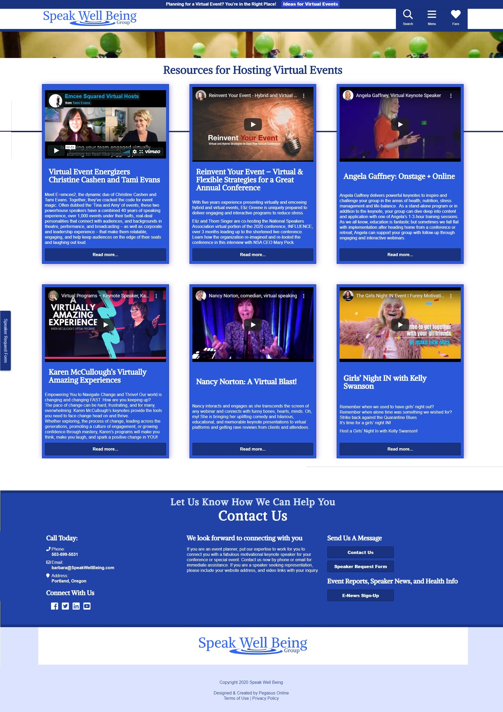

Due to covid, the client needed a new way to showcase her speaker's virtual and online talent. The client needed something which was easy for her customers to browse, also quick to learn and simple to use on the backend. In addition, it needed to fit seamlessly into her site's design.
Approach:
I used PHP and CSS Grid and Flexbox. I also went into Google adwords and did some serious keyword research, to boost her on-page SEO. I decided to add a plugin to her site, since we may need to remove it after covid. I created her a custom post with a video post format that was easy to upload new videos to, and looked modern while adhering to her site's design conventions.
Results:
In the days after I finished it, the client was able to upload 6 new video blogs herself, and showcase them to her speakers. In just 2 weeks the client began to get inquiries for virtual speakers, which was vital after so many conference cancellations.
